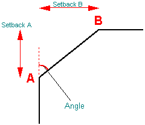

Info page, Element Properties dialog box (Chamfer)
- Type
-
Displays the type of the selected element. You cannot edit the type.
- Sheet
-
Displays the name of the drawing sheet the element is on. You cannot edit the name of the drawing sheet.
- Layer
-
Sets the layer the element is on. This option is available only in the Draft environment.
- Angle
-
Measures the angle between the chamfer and the first linear element.

- Setback A
-
Specifies the distance from the corner to the beginning of the chamfer on the first linear element you select.
- Setback B
-
Specifies the distance from the corner to the beginning of the chamfer on the second linear element you select.